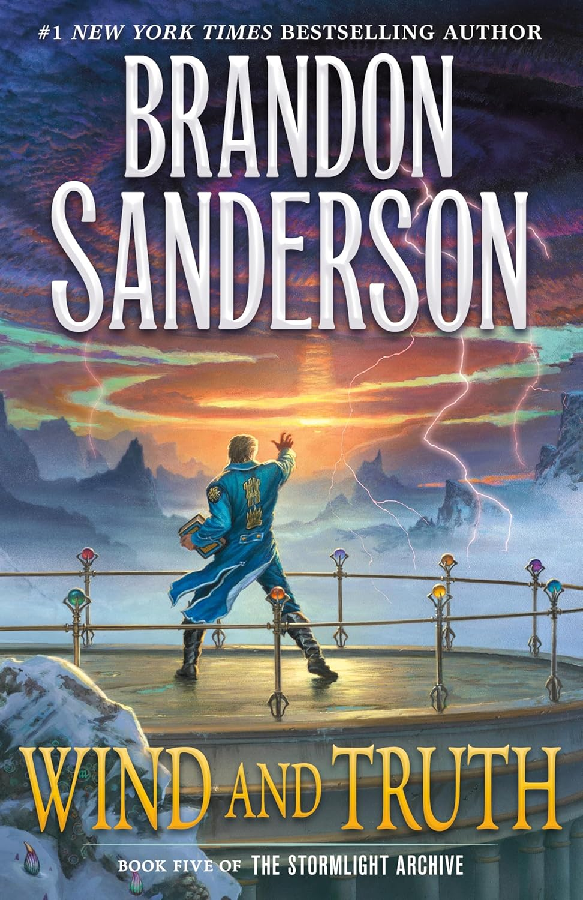

"Wind and Truth"
- Read on 2025-02-12
- Rating: ️️️️️
- Format: 🎧 (62 hours 48 minutes)
You shouldn't read this without reading the rest of the series. This was a long book. I enjoyed it, and there were some really cool parts of it. But I think there was too much going on. I needed about half of this book, and probably needed less detail in the other half. I'll read the sixth book, when it comes out. I'm intrigued by where some of the characters are going. But with all that was going on, I definitely missed some of the details, as well as not comprehending all of the leaps that were being made. I wish I enjoyed this more, but admittedly, by the end of it, I was just glad to be done.
- Prior: The Book of Boundaries
- Next: Deacon King Kong